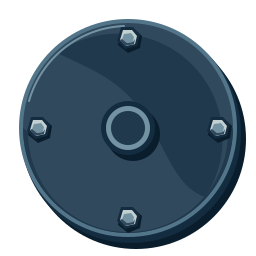
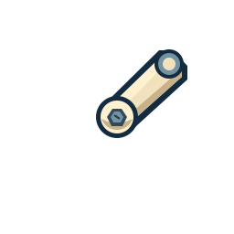
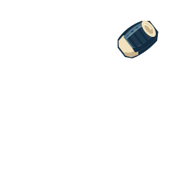
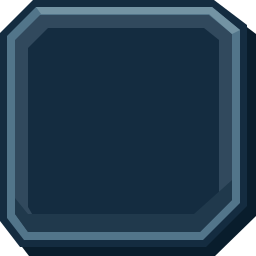

Scrapworks UI kit
Uneven cuts. Crooked titles. Reinforced seams. Flexible layouts.
Hand crank
Four rim bolts at 12, 3, 6 and 9. A raised metal arm, central bearing and cylindrical grip with end caps and grip ribs.
Housing, arm and grip remain separate registered layers. The crank has no repair patch.



Dialog shell
Fixed corner shoes + repeating lap joints
The shell owns its stepped border, unequal corner shoes and deep navy sides.
Content
reflows inside it; ornamental pieces retain their proportions.
Buttons and states
One square upper-right corner; three different clipped cuts. Deep lower edge.
Title plates and tabs
Titles rotate with their plates. Oversized coral wings repair the title ends; coral caps also mark selected tabs. Body copy stays level.
Inputs and progress
Value and meaning accompany colour. Unfilled track stays neutral.
Slots, wells and status
Reserved status space keeps actions anchored.
One inset surface for slots, recipe wells and status plates.
Different jobs, different repairs
One material language, varied silhouettes. Keep the display edges busy and the reading areas quiet.